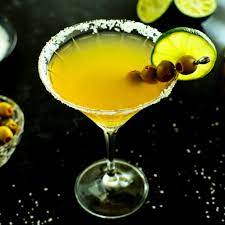
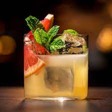

Jared's Big Marg
Casamigos Repo | Grand Marnier | House-Made Sour

Bubbles and Flowers
Passion Fruit | Champagne | Hibiscus
Oaxacan Old Fashioned
Don Julio Repo | Amaro Liquor Apertif | Demerara Simple Syrup
Mexican Martini
Clase Azul Plata | Cointreau | Green Olive
Spicy Saketini
Big Boss Sake | Roku Gin | Cucumber
Kyoto Sour
Gekkeikan Sake | Green Tobasco | Grapefruit
Draught Beer
Coors Light
Kirin Light
Sapporo
Blue Moon
Modelo Especial
Barrio Blonde
Sake *11oz carafe*
Shichida Junmai
Mushrooms, plum, cereal
Dewazakura Cherry Bouquet Oka Ginjo
Cherry Blossom, radish, apricot
Nanbu Bijin "Southern Beauty"
Passhionfruit, Pineapple, crisp and dry
Yuki no Bosha "Cabin in the Snow"
Strawberry, white pepper
Kikusui Perfect Snow Nigori
Coconut, cream, rice
1730 E. Camelback Rd Glendale, Arizona (480) 972-3378